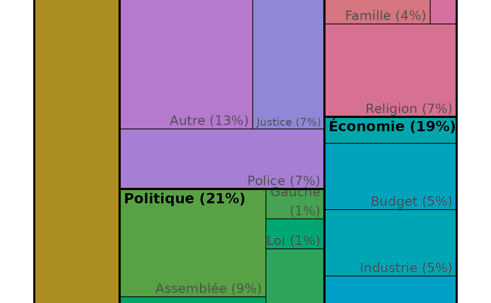

Plot a treemap of thema and classe of segments
Usage
treemap_double_classe(
df,
id_theme,
theme,
classe,
threshold = 30,
title = "Treemap",
footer = "",
palette = NA
)Examples
df_segment <- read.csv(lexico_example("df_segment.csv"))
treemap_double_classe(df_segment,"id_classe","classe","classe_local",0)
